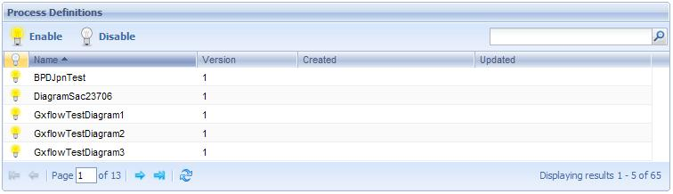
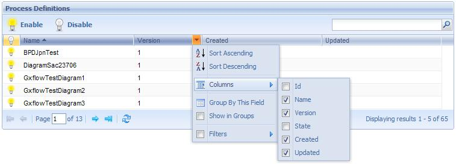

Through this application process administrator users can visualize and control the process definitions existing in the system. The following figure shows the Process Definition application interface:  The following sections describe the different components making up this application. Button Tollbar
Process Definition Grid (status): Indicates if the process definition is enable. Id: Process Definition Id Name: Process definition name. Version: Process definition version number. State: Process definition current state. The possible statuses of a process definition are the following: Created: Process definition creation date. Updated: Date of the last process definition update. |
| Backlinks | |
| HowTo: Using GXflow Entry Point User Control | Process Manager |